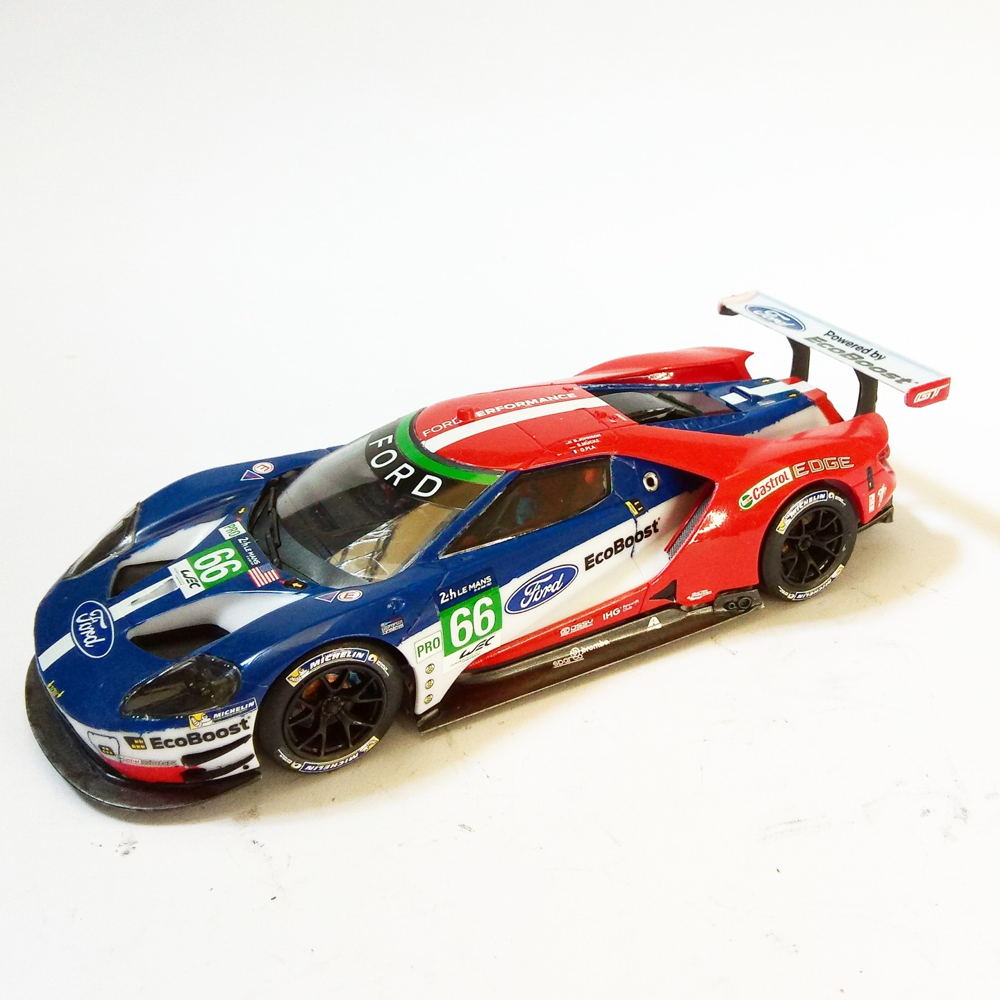

Auto e veicoli stradali · scale model archive
Ford GT LeMans
Ford GT LeMans — Kit: Revell, Scale: 1/24. Interesting aerodynamic concept #1/24 #Revell

Photo gallery
English description
Interesting aerodynamic concept
#1/24 #Revell
Descrizione italiana
Interessante aerodynamic concetto.